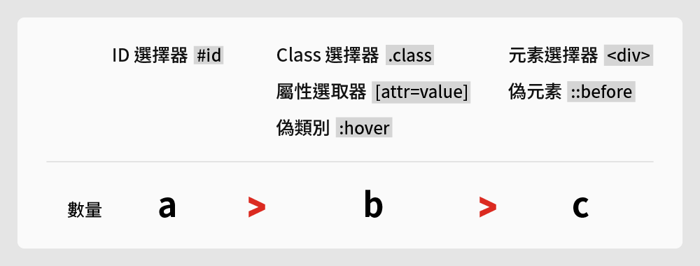

在談論 CSS Selector 權重的「計算方式」之前，我們先來了解 CSS Selector 的優先權。
在優先權規則中，從高至低排列分別為：
Animation（動畫執行期間）> !important > inline style > ID > Class 與屬性選取器 > 元素選擇器 > ＊通用選取器 > 繼承的屬性
CSS Selector 的類型
1. Animation（動畫執行期間）
關鍵影格（@keyframes）中的 CSS 屬性在「動畫執行期間」擁有絕對的優先權。
2. !important
!important 是 CSS 中的特殊規則，只要在 CSS 屬性後面接上「!important」，將會變成極高的優先權，是人人懼怕的大魔王。
1 | <p class="title">Hello</p> |
1 | p { |
原本 Class 選取器 .title 優先於元素 <p>，一旦在屬性加上 !important 後，最後 Hello 字體呈現的結果會變成：
1 | color: red !important; /* <p> !important 強制優先權 */ |
3. 行內樣式（inline style）
利用 HTML 元素中的 style 屬性將 CSS 樣式寫入，就稱為行內樣式（inline style）。
1 | <p style="color: red;">Hello</p> |
4. ID 選擇器 #id
5. 類別選擇器.class 與屬性選取器 [attr=value]
Class 選擇器值得一提的是，偽類別 (pseudo-class) ，是由單一一個「:」冒號作為開頭的選取器，本身也是 Class 選擇器的其中之一，讓人容易與「::」作為開頭的偽元素 (pseudo-element) 混淆。
偽類別：:hover、:nth-child…
偽元素：::before、::after、::placeholder…
6. 元素選擇器
例如：<p>、<head>、<div> …
7. ＊通用選取器
全域選擇器以星號 * 代表，適用於所有元素
8. 繼承的屬性
如以下範例，雖然 <p> 沒有設定文字色彩屬性，但因為 <p> 寫在 <div> 當中，故 <p> 會繼承父層 <div> 的文字屬性。
1 | <div> |
1 | div { |
CSS Selector 的計算方式

計算值
- ID 選擇器 = a
- Class 選擇器、屬性選取器、偽類別 = b
- 元素選擇器、偽元素 = c
計算方式
先比較 a 的數量，其次比較 b 的數量，最後比較 c 的數量
範例
| 選擇器 | 權重值 | 順位 |
|---|---|---|
| #nav > li.active::before | a = 1, b = 1, c = 2 | 第一 |
| #nav li.active | a = 1, b = 1, c = 1 | 第二 |
| div .card.active:hover::before | a = 0, b = 3, c = 2 | 第三 |
| ul > li:hover | a = 0, b = 1, c = 2 | 第四 |
如果想知道自己對於 CSS Selector 的優先權及計算方式的觀念是否正確，非常推薦到 Specificity Calculator 這個網站測試看看。
參考：
- 關於 Webpack，它是什麼？能夠做什麼？為什麼？怎麼做？
- Gulp 与 WebPack 有区别吗？如果有，有什么区别？
- 《金魚都能懂的 CSS 選取器：金魚都能懂了你還怕學不會嗎》書籍內容
- CSS3 Selectors Specificity